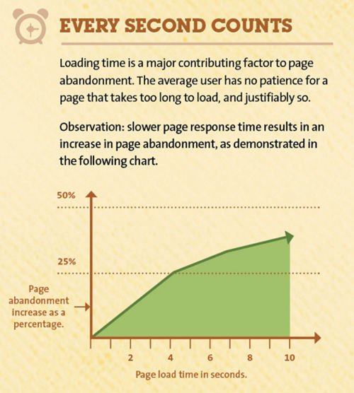

Den övergödda webben
Den övergödda webbenSkrivet av Tony Gustafsson 2016-01-26.
Problemet långsamma webbplatser
Internet har ett problem - nämligen övervikt. Den genomsnittlige webbsidan på Internet laddas ner med 2,3 MB under 2015, vilket är en siffra som har ökat med 16 % sedan året dessförinnan. Så här har det sett ut, år efter år, sedan webben startade.
En bidragande faktor är att vi i väst har fått snabbare internetförbindelser, och en annan att tekniken för multimedia utvecklats rejält de sista åren.
| Media | 2014 | 2015 | Ökning |
|---|---|---|---|
| HTML | 59 kb | 66 kb | 12 % |
| CSS | 57 kb | 76 kb | 33 % |
| JavaScript | 295 kb | 363 kb | 23 % |
| Bilder | 1243 kb | 1443 kb | 16 % |
| Flash | 76 kb | 53 kb | -30 % |
| Annat | 223 kb | 261 kb | 17 % |
| Totalt | 1953 kb | 2262 kb | 16 % |
Från det här kan vi dra ganska tydliga slutsatser - det är framför allt bilder som tar bandbredd, och det är CSS och JavaScript som ökar mest per år. JavaScript och CSS tror jag kan fortsätta öka om ingen tar sig an det verkliga problemet: att prioriterar webbprestanda. Jag har arbetat på flera arbetsplatser med webbutveckling, och sällan ifrågasätter man antal extra kilobyte för att införa nya funktioner. I stället mäter man arbetstid enda mätvärde.
Vad det innebär
Människor är lata och har höga krav. De vill inte ställas inför krångliga beslut, de vill inte läsa om hur man ska göra, och de vill absolut inte vänta. Väntan är en av de största faktorer för att besökare lämnar en site, eller överger sin kundkorg. Det är inbyggt i oss - det kliar i oss när vi inte kan arbeta så fort som vi vill och datorn blir en bromskloss.
Man har sett att bara en sekunds extra väntetid minskar konverteringen med 7 %, och ger 11 % färre sidvisningar. Det minskar kundnöjdheten med hela 16 %, och det är bara en sekund extra. Annan statistik visar att nästan hälften av besökarna förväntar sig att sidan ska laddas på två sekunder eller mindre, vilket väldigt sällan är fallet.
 Illustration som visar hur fort användarna lämnar sidan om den upplevs långsam
Det upplevs som ett problem för alla - men framför allt är det ett problem för mobila användare, och för människor i länder med sämre infrastruktur. Över hälften av alla sidbesök är idag från en mobiltelefon - och vi laddar upp fler och större bilder - vilket blir en väldigt konstig och ogenomtänkt kombination.
Ibland när användarna blir irriterade av en webbsida så kan de har svårt att berätta varför. Det beror på att det oftast inte är en enskild sak som gör det, utan många mindre, irriterande saker som händer. En knapp hittas inte, sidan tar 5 sekunder att ladda, man förstod inte vart man skulle klicka - osv. Just hastigheten på en webbsida är en typisk sådan sak som inte så många klagar över, men som irriterar oss väldigt mycket. När vi kommer över en väldigt snabb sida så blir vi ofta glada och nöjda utan att tänka på att sidan är snabb. Det här gör förstås att företag kanske inte hör så mycket klagomål kring att deras sidor är långsamma, men att det ändå är ett stort problem.
Till sist skulle jag också vilja ge en känga till reklambyråerna. De har ju insett att webben är det som gäller, och sedan dagen de insett detta har de delvis förstört vår upplevelse av webben. Jag är inte emot reklam - jag förstår dess syfte - men sättet de implementerar den på är förskräcklig många gånger. De ger inte sidorna som håller reklamen någon kontroll alls över reklamen, och de är ofta en orsak till att webbsidor kan bli dubbelt så stora än de var tänkt att vara. Därför är det webbmakarnas uppgift att se till att välja en reklamleverantör som håller måtten.
Vad är lösningen?
Rent tekniskt beror problemen på tiotals olika faktorer, och oftast går det att lösa utan att lägga allt för mycket tid. Tekniker som cache, hopslagning av filer, komprimering m.m. hjälper oss till stor del. Vi har även verktyg som kan sätta betyg på sidor utefter hur bra jobb man gjort med detta i åtanke, så som Google Page Speed.
En av de saker som kommer fixa en väldigt stor del av problemet är responsiva bilder. Tekniken är dock i sin linda. Det används ofta för att leverera bilder med hög pixeltäthet till skärmar som klarar av att visa upp det - vilket oftast innebär mobiltelefoner och paddor. Bilder med hög pixeltäthet innebär större bilder, och det är ju just mobiler som har mest problem med stora filer. Vi behöver smartare responsiva bilder - som tar hänsyn till nätverkshastigheten - och vi är snart där.
Google har också försökt hjälpa oss på traven genom att visa en "Slow"-label på sökresultat som leder till långsamma sidor. Man kan också påverkas negativt i sin position hos Google om ens sida anses vara långsam. Jag tycker det är en välkommen spark i baken på webbutvecklarna och företagen som inte ser det som en prioritet.
Vi ser också lösningar som The AMP Project som tvingar webbutvecklarna att arbeta med en mer begränsad webb, men som standard är extremt anpassad för snabbhet.
Slutsats
Min prognos är att det först kommer bli värre - för att sedan bli bättre. I ännu ett par år kommer webbsidorna öka i storlek, innan företagen kommer satsa pengar på att banta ner sina sidor.
Jag tror inte på lösningar som The AMP Project som förhindrar att webbutvecklarna tar dumma beslut genom att begränsa dem. Jag tror mer på att utvecklarna själva förstår vad prestanda är och vad den innebär. Duktiga webbutvecklare vet redan hur de ska göra - men företagen låter dem inte fokusera på dessa delar.
Nu när iPhones och iPads börjat stödja adblockers så väntar jag mig också respons från reklamföretagen, och en förändring så småningom som leder till mer smakfull reklam, som inte får sidan att hoppa vid laddning, och som inte tar mer än några kilobyte att ladda ner.
Satsuma Studios kommer alltid att fokusera på snabba, enkla och rena sidor. Självklart finns det funktioner som helt enkelt tar tid att exekvera - men ofta kan resultatet från dessa funktioner cachas/sparas till nästa förfrågning, eller laddas i efterhand så att det inte stör läsandet av sidan, eller så kanske funktionen inte är så viktig som kunden tror.